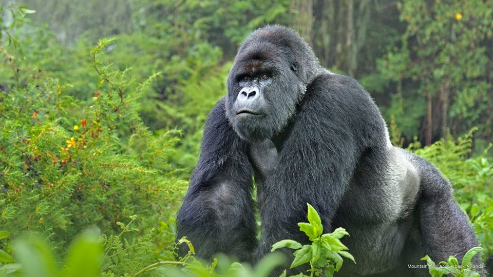

Tour Rwanda 8 days

RWANDA – (7 nights / 8 days )
November 18, 2016
PRIMATES TOUR – Nyungwe – Kibuye – Gisenyi – Volcanoes NP
This proposal suits all clients’ desires of exciting experiences of getting one on one with the Primates here in Rwanda!!! ITINERARY
Day 1 – ARRIVAL (5kms / Drive time – 15mins )
You will be met on arrival and be transferred to your Hotel for check in and freshen up. Thereafter and if time allows enjoy a Kigali City tour including the Kigali Genocide Memorial Centre if time allows. In the evening back to your Hotel.
Proposed Hotels
Beausejour Hotel
Lemigo Hotel
Kigali Serena Hotel
Radison Blue Hotel Kigali
Day 2 – DRIVE TO NYUNGWE NP. (220kms / Drive time – 7hrs)
08:00 AM: Breakfast at the Hotel and leave the City for Nyungwe National Park via Butare Museum visit and lunch. The drive will perfectly introduce you to the real
Rwanda….”Land of a Thousand Hill and a Million Smiles”. Curvy and a smooth road will make your long drive all enjoyable. Arrive at your lodge for dinner overnight.
Proposed Hotels
Emerald Kivu Hotel
Nyungwe Top View Hill Hotel
Nyungwe Forest Lodge
Day 3 – CHIMPANZEE TREKKING IN NYUNGWE’s NP – CYAMUNDONGO FOREST
(Distance : Approx. 45kms / Time taken with Chimpanzees : 1hr) / Canopy Walk for about 1.5hrs.. 05:00 AM: The 4 Adults take an early morning breakfast drive to this park for the starting point of your Chimpanzee trek. Two species of chimpanzee occur in Africa. There is the Bonobo and the Common Chimpanzee Pan troglodytes (often shortened to Chimpanzee, and sometimes referred to as the Robust Chimpanzee).
Lunch by 2 pm – enjoy a Canopy walk and thereafter back to the lodge / hotel for dinner.
Day 4 – DRIVE FROM NYUNGWE TO KIBUYE. (Distance : Approx. 120 Kms /Drive time – 3hrs)
08:00 AM : Breakfast at your Hotel and check out for a drive to the north along the beautiful shores of Lake Kivu to Kibuye town, and check in at Cormoran Lodge for lunch. Afternoon drive / walk visit with the town meeting the local people or relax by the beaches of Lake Kivu and thereafter dinner.
Proposed Hotels
Rwiza Village Hotel
Cormoran Lodge
Day 5 – BOAT TRANSFER FROM KIBUYE TO GISENYI. (Cruise time – 2hrs)
This will be a unique day. You will be transferred from Kibuye to Gisenyi by a speed boat (takes about 2 hours as opposed to a 4-hrs drive! Your driver Guide will liaise with the Boat Captain to pick you up from the lodge by 09:00 a:m before his 2 hrs earlier departure.
He will then meet up with you at Gisenyi dock and proceed on to a City tour on Gisenyi town border to Goma, DRC Congo town border. Compare the 2 towns and learn more..
Proposed Hotels
Paradise Malahide Beach Resort
Waterfront Beach Resort
Kivu Serena Hotel
Day 6 – DRIVE TO MUSANZE. (Distance : Approx. 60kms / Drive time – 1hr)
Have a relaxed breakfast at the Resort and thereafter and check out for a drive up to Musanze town, the second largest town in Rwanda, with a stunning backdrop of Five well lined up Virunga mountains forming the famous Rwanda’s Volcanoes NP, famous home to the endangered Mountain Gorillas. Lunch in town as you visit the town markets and the main business areas and make more friends who will be happy to share some of their life experiences in their daily routines. Thereafter proceed to your accommodation for dinner and overnight.
Proposed Hotels
Best View Hotel
Mountain Gorilla Villa View Lodge
Five Volcanoes Boutique Hotel
The Gardner Place Hotel
Day 7 – GORILLA TRACKING EXPERIENCE! (Distance : Approx. 35kms /Time with Gorillas : 1hr)
06:30 AM: Enjoy an early breakfast and be transferred to Volcanoes National Park headquarters at Kinigi and for Gorilla tracking registration and briefing. Kindly ensure to have original passports to match the Gorilla permits details provided at the time of booking.
By 07:00 AM: You will be divided into groups of 8 persons per Park Guide and he will conduct a Gorilla tracking briefing on the dos and don’ts as well as the history of the Gorilla Family to be visited.
By 08:00 AM: Leave the headquarters to the head trail where you will begin the Gorilla tracking experience in the forest. Depending of where the Gorilla family allocated is on that particular day, the treks vary and ranges from Half Hour to about 6hrs. Good hiking boots, rain jackets, hats and hand gloves are recommended. After Gorilla tracking drive back to the lodge for freshen up and lunch. Afternoon at leisure around the lodge or find enough time to admire your photos and Videos on the Gorilla tracking activitie. Late afternoon enjoy the traditional dance with the local dancers.
Day 8 – GOLDEN MONKEYS TREK + RETURN TO KIGALI & DEPART
Time taken with the Golden Monkeys : 1hr) & (110kms / Drive time – 2hrs back to Kigali City) After breakfast at your Hotel leave for the Volcanoes NP, this time for Golden Monkeys trek. The adult monkeys frolic in plain view, feeding on bamboo leaves and leaping from perch to perch. Females carry their young, completely comfortable among onlookers. Return to your hotel to freshen up, have lunch and thereafter drive back to Kigali and proceed on to Kigali Airport for your evening departure flight. End of tour.